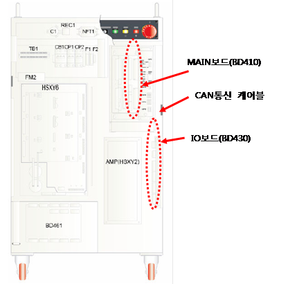
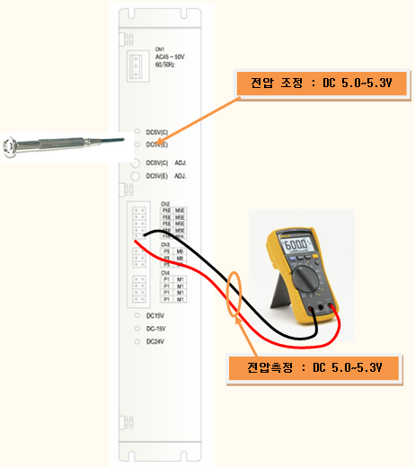
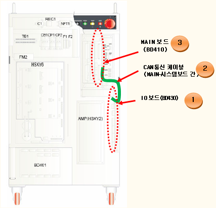

8.1. 개요
제어기의 IO보드는 RS232통신을 사용하여 MAIN보드와 데이터를 주고 받습니다. E0022는 MAIN보드가 IO보드 간의 통신 상에 이상을 감지할 때 나타나는 에러 코드입니다.
그림 5.18 MAIN보드와 IO보드의 통신
IO보드는 제어기의 전원시퀀스의 입출력을 통제하는 모듈로서 한 번 이 에러가 발생하면 이와 관련된 모든 기능이 정지되며 MAIN은 통신을 중단합니다. 따라서 모든 기능을 정상적으로 되살리기 위해서는 제어기 전원을 재투입해야 합니다.
8.2. 원인 및 점검방법
|
1. 일반점검 1.1 CNIO 통신케이블 접속상태를 확인하십시오. 1.2 전원상태 (전원전압 또는 케이블 접속상태)를 확인하십시오.
2. 제어기 전원 재부팅 후에도 에러가 계속 발생되고 있는 경우 |
1. 일반점검
정상적으로 시스템이 가동하는 중에 이 에러가 발생했다면 가장 먼저 다음을 점검하십시오.
|
|
참고 “E0022 내부모듈간 통신이상”이 발생하면 시스템보드가 통신을 재개한다고 해도 메인보드는 시스템보드와 통신을 재개하지 않습니다. 제어기를 재부팅해야만 통신이 재개됩니다. |
1.1 통신케이블(CNIO) 접속상태를 확인하십시오.
MAIN보드와 시스템보드간의 통신케이블(CNIO)이 잘 접속되었는지 확인하십시오. 커넥터의 접촉불량일 수 있으므로 MAIN보드의 CNIO커넥터와 시스템보드의 CNIO커넥터를 탈착하고 에러발생 여부를 다시 확인하십시오.

그림 5.19 MAIN보드와 IO보드의 통신케이블 연결
1.2 전원상태 (전원전압 또는 케이블 접속상태)를 확인하십시오.
시스템보드에 DC 5V 제어전원이 정상적으로 공급되는지를 확인하십시오. 전원에 이상이 있을 경우 시스템보드의 동작이 안되므로 이 에러가 발생할 수 있습니다.
SMPS의 출력단자로부터 DC 5V 제어전원 전압이 5.0V~5.3V 영역 이내에 있는지 확인하십시오. 전압이 이 영역 외의 범위에 있다면 통신에 영향을 줄 수 있습니다. 점검위치는 다음 그림과 같으며 만약 범위 밖에 있다면 SMPS에서 전압을 5.0V~5.3V 영역으로 조정하십시오.

그림 5.20 DC 5V전원 전압측정 및 조정방법
2. 제어기 전원 재부팅 후에도 에러가 계속 발생되고 있는 경우
제어기 전원을 재부팅한 상태에서도 에러가 이미 발생되고 있어서 에러메시지가 나타난 경우에는 다음의 순서에 의해서 보드나 케이블을 교체하고 이상유무를 판단하십시오.
2.1 IO보드를 교체하십시오.
2.2 CNIO케이블을 교체하십시오.
2.3 MAIN보드를 교체하십시오.
